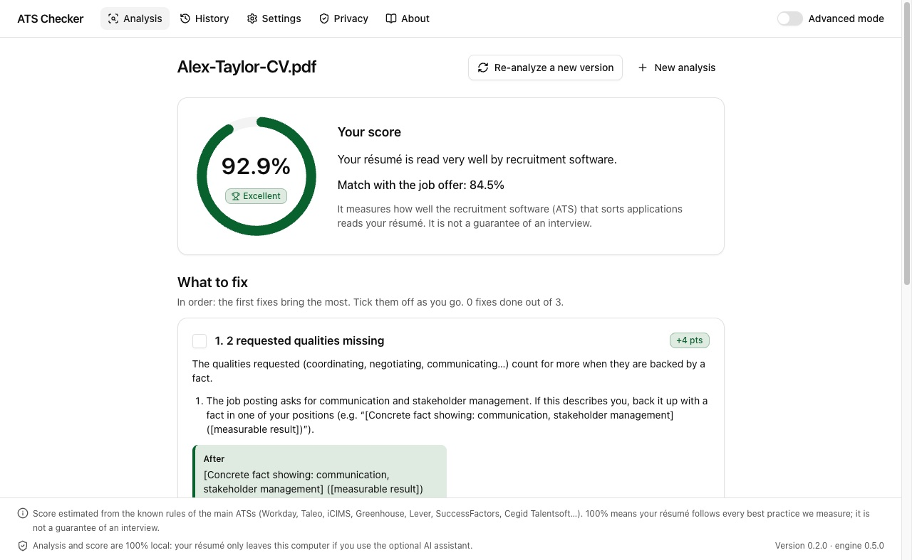
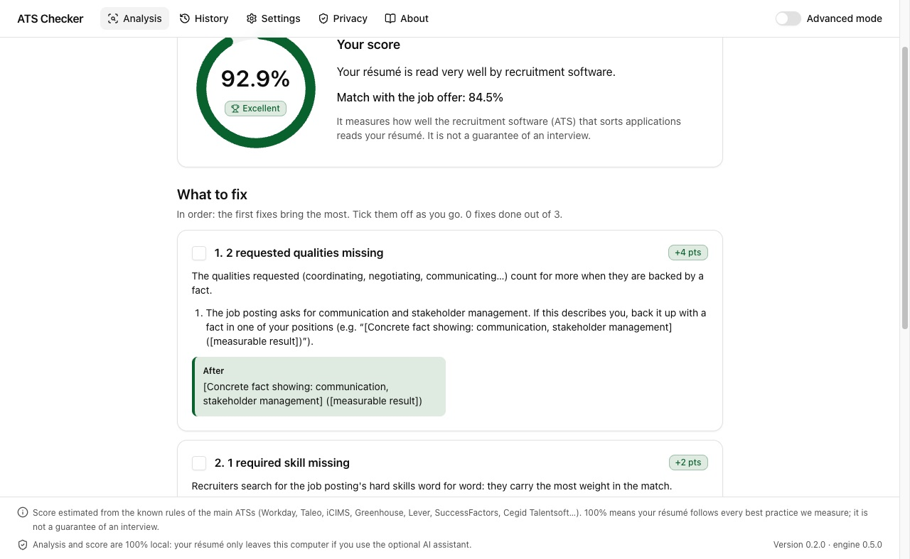
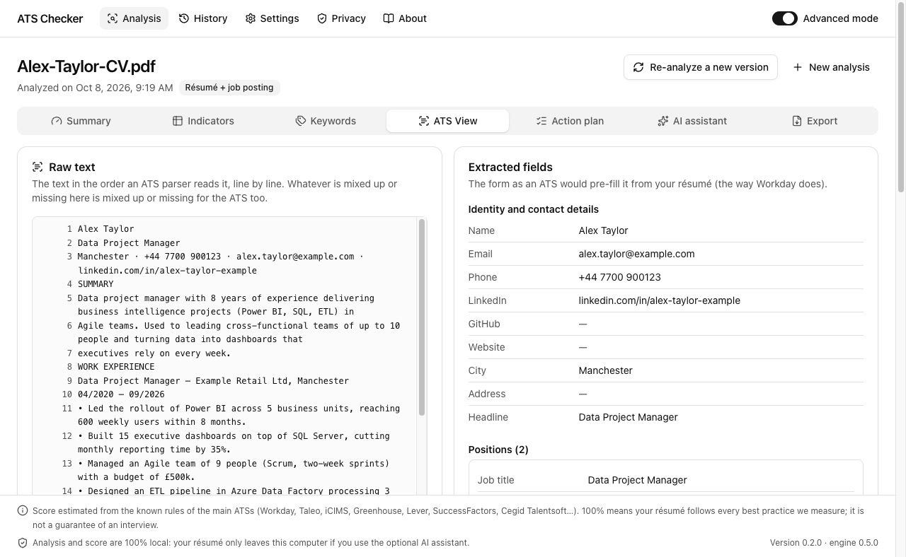

Is your résumé read correctly by recruitment software?
ATS Checker reads your résumé the way applicant tracking systems (ATS) do. You get a score, a precise list of what to fix and, if you paste a job offer, the keywords you are missing.
- Free
- 100% local
- No account
- Mac and Windows

How it works
Three steps, no settings, no jargon: the app opens in standard mode, designed for everyone.
-
Drop your résumé
PDF, Word (DOCX or DOC), RTF, ODT or plain text. Even a scanned PDF is read, with character recognition.
-
Paste the job offer
Optional. The analysis then checks the keywords, the job title and the requirements: degree, years of experience, languages.
-
Follow the fixes
Ranked by importance, each with what it brings and a before → after example taken from your résumé.
What you get
An ATS first converts your résumé into text, then splits it into fields: name, contact details, positions, dates, degrees, skills. If that reading fails, your résumé becomes hard to find. ATS Checker shows you what it sees.
- A clear score, explained in one sentence.
- What to fix, in order, with checkboxes to track your progress.
- The job offer words missing from your résumé, to add them if they truly match your experience.
- A PDF report to keep or share, and the history of your analyses.
- Re-analyze a new version to see what improved.

What an ATS reads
In advanced mode: the raw text in the order software reads it, and the extracted fields as a pre-filled form. Whatever is lost or mixed up stands out.
28 indicators
File readability, columns, tables, sections, dates, quantified results, action verbs, contact details… each with its evidence and explanation.
Optional AI assistant
With your own Claude key: it rewrites a bullet or tailors your summary to the offer, without inventing anything. You approve every suggestion.

Your résumé stays with you
- 100% local analysis: everything happens on your computer, including reading scanned PDFs. Your résumé is not sent anywhere.
- No account, no ads, no analytics, neither in the app nor on this site.
- The AI assistant is off by default. If you turn it on with your key, only the excerpts needed go to Anthropic, after your consent, with contact details masked.
- The history can keep scores only, and clears in one click.
An honest score
There is no official “ATS score”: every company configures its software its own way. ATS Checker applies the known rules of the main systems (Workday, Taleo, iCIMS, Greenhouse, Lever, SuccessFactors, Cegid Talentsoft…).
100% means your résumé follows every best practice we measure; it is not a guarantee of an interview.
And no, “75% of résumés are rejected by robots” is not an established fact: the figure rests on no published study. ATS rank and filter; a misread résumé mostly becomes hard to find.
Installation
Free, no sign-up. Updates install over the previous version, and your history is kept.
Mac
- Download the
.dmgfile and open it. - Drag ATS Checker into the Applications folder.
- Launch it: the app is signed and notarized by Apple, it opens without a warning.
Mac with Apple silicon (M1, M2, M3, M4…), macOS 13 Ventura or later. Intel-based Macs are not supported for now.
Download for MacWindows
- Download the
.exeinstaller and run it. - If Windows shows “Windows protected your PC”, click More info, then Run anyway.
- Follow the setup wizard.
Why this warning? The installer is not yet signed with a paid code-signing certificate; Windows warns about any unsigned program. You can check that the file is intact with its fingerprint below.
Windows 10 or 11, 64-bit.
Download for Windows
SHA-256 fingerprints of version 0.2.0 (on Mac:
shasum -a 256 <file>, on Windows:
Get-FileHash <file>):
44881824d8e78bfff92c279acc46e93df07568450e089abe130a7ef95f577342
ATS-Checker-Windows-x64-Setup.exe
93a0c63e50f1b4e4ace101371b74a1a94cfb07fe4aa06a1dd85696034693f378
Frequently asked questions
Is it really free?
Yes: no subscription, no account, no ads. Only the optional AI assistant uses your own Claude API key; that usage is then billed to you directly by Anthropic.
Is my résumé sent anywhere?
No. The analysis runs entirely on your computer. Nothing leaves without your action: only the AI assistant, if you turn it on and consent, sends excerpts to Anthropic.
Which résumé formats are supported?
PDF (text or scanned), Word (DOCX, DOC), RTF, ODT, plain text, and even a PNG or JPG image. Text PDFs and Word files are the most reliable, for ATS Checker as for recruitment software.
Which languages?
Résumés and job offers can be in French or English: the language is detected automatically. The app is available in French and English.
Does a 100% score guarantee an interview?
No. It means your résumé follows every best practice we measure to be read and found correctly. The final choice is still a recruiter's.
Does it work on an Intel-based Mac?
Not for now: the Mac version requires Apple silicon (M1 and later).
Why does Windows show a warning?
The Windows installer is not signed yet, so Windows SmartScreen warns about it like any unsigned program. Click “More info”, then “Run anyway”. The Mac version is signed and notarized by Apple.
Simple or detailed?
The app opens in standard mode: your score and what to fix, without jargon. The “Advanced mode” switch shows every detail: indicators, keywords, the ATS view, exports and the AI assistant.